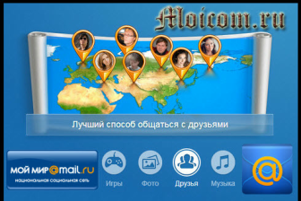
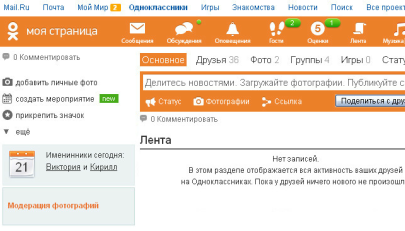
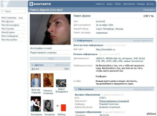
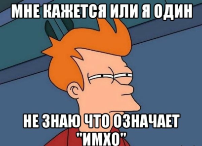
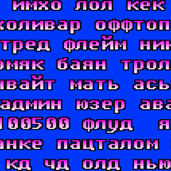
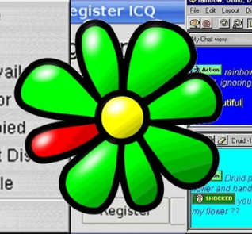
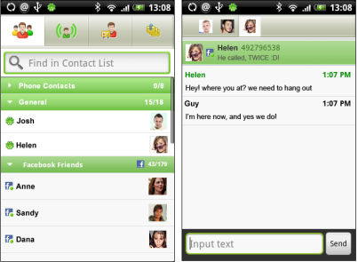
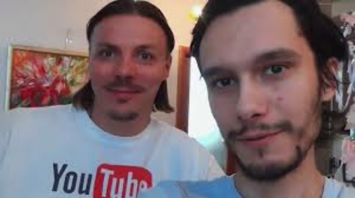
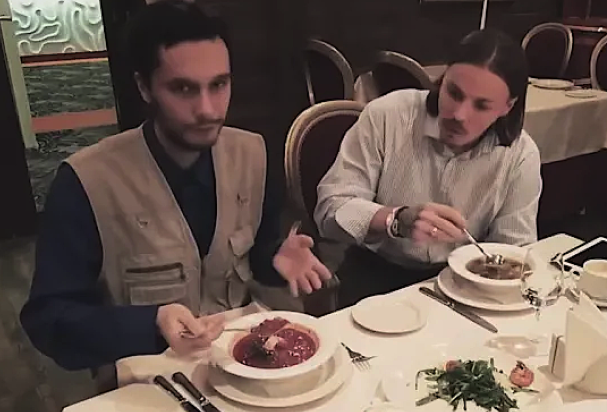
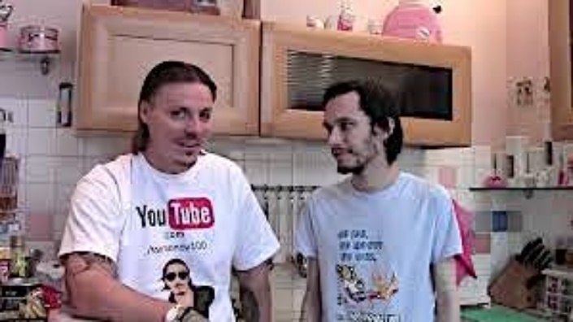

Раздел «Статьи» на нашем сайте разбирает старый
интернет не только через приятную ностальгию,
но и через исследования и эксперименты.
Здесь мы рассказываем, как выглядели первые интернет платформы,
какие технологии тогда казались революционными и почему часть
из них исчезла навсегда, о старых трендах сети
и многом другом. Мы вспоминаем вирусные явления и феномены
сетевой культуры, которые формировали поколение пользователей.
Каждая статья является маленьким погружение в цифровое прошлое.
Мы рассказываем, как появлялись легендарные мемы и почему
некоторые из них до сих пор живут в нашей культуре
и вызывают приятные воспоминания. Здесь нет сухой теории,
мы преподносим материал в легкой и приятной форме для
чтения. Желаем вам прекрасного чтения!!!
История социальных сетей ярко отражает развитие общества. Сейчас
чаще всего используется Телеграм, чуть реже Вконтакте,но давайте
откатимся на 15 лет назад и посмотрим на картину
происходящего. Взглянем на историю рунета, поскольку с ней
мы все знакомы лучше и жили в его контексте. Пройдемся
по хронологии переходов сообщества из одной соцсети
в другую.

Скорее всего вашей первой страничкой была страница
в «Моем мире», ведь все мы заводили почту,
и mail.ru высвечивал в верхней строке манящую ссылку
на этот сайт. Пользователи создавали страничку, заводили
друзей, обновляли фото и играли в игры. Браузерные игры
той эпохи — это тема на отдельную статью,
а то и целую серию. Время шло, а «Мой
мир» словно застыл где-то в прошлом: никаких обновлений,
устаревший интерфейс, а внимание людей становилось все сложнее
удержать.

Тогда на арену вступили «Одноклассники». Они были
яркими для того времени и расширяли возможности, которые уже
были у пользователей. В них все твои действия были как
на ладони и никого это не смущало. Спустя годы,
возвращаясь на свою страницу можно умереть от стыда за
свои лайки и комментарии, но тогда это было вполне
нормальным. Огромное количество сообществ и игр, просто море
контента. На этом сайте люди находили своих старых друзей
и восстанавливали связь, дарили друг другу подарки
и просили зайти знакомых в ту или иную игру для
взаимопомощи. Это был уже более популярный проект, в отличие
от «Моего мира», про него знают многие, пусть даже
и хотя бы в ироничном контексте. Сейчас основной
активной аудиторией являются люди за 50, которые привыкли
к ним и их все устраивает. Стабильность
— это в своем роде тоже хорошо.

И наконец главная соцсеть рунета: «Вконтакте».
Золотая эпоха интернета: стена, сохраненки, топовые паблики
и многое другое. Вряд ли есть много людей, у которых
никогда не было странички в вк. Он прошел через многое
и стал теплым воспоминанием о юности для целого поколения.
В отличие от предыдущих, вк жив и до сих
пор обновляется с завидной частотой. Да, онлайн в нем
бесспорно упал с 2017, но тем не менее. Работает
он до сих пор неплохо, особенно в ограничениях рунета
в данный момент.
Переходить из одной сети в другую было тяжело по ряду
причин. Кому-то нравилась стабильность, кому-то не заходил
дизайн других сетей, кто-то был привязан к своим аккаунтам
в играх(прогресс сохранялся для каждой соцсети отдельно,
а ведь кто-то донатил), но время все расставляло по своим
местам. Сейчас на многих страницах последний заход
в онлайн был несколько лет назад. Мы оставили мощный
цифровой след. Старые соцсети это громадные цифровые кладбища, тонна
неизведанного материала. Менялись сайты, менялся портрет эпохи,
менялись наши ценности: от камерности и закрытости,
к открытости миру и к созданию своего образа
в глазах окружающих. Мы стали менее искренними
с годами, перестали доверять людям в интернете, что
пожалуй не зря. И то как менялся выбор людей
показывает всю смену менталитета интернет сообщества.
За время существования интернета появилось огромное количество
слов, сокращений и новых значений у старых понятий. Язык,
который раньше менялся десятилетиями, внезапно оказался
в условиях непрерывного эксперимента. Часть новых слов родилась
из технических ограничений, часть из локальных шуток
и форумных мемов, а часть просто потому, что людям лень
печатать лишние буквы и соблюдать нормы, придуманные
в доцифровую эпоху. Интернет-сленг это не отдельный язык,
а постоянно меняющийся слой поверх обычной речи. Он заимствует,
сокращает, искажает и переосмысляет слова, превращая
их в маркеры принадлежности к среде. Здесь важна
не столько точность формулировки, сколько скорость реакции
и узнаваемость сигнала. Сказать длинно значит проиграть
по времени. Сказать коротко значит быть понятым.

Например, «имхо» формально расшифровывается как
«по моему скромному мнению»,
но на практике почти всегда означает: «я считаю
себя правым, но не хочу отвечать
за последствия». «Флуд» это не просто
поток сообщений, а момент, когда разговор окончательно потерял
смысл, но участники продолжают писать по инерции.
«Бан» это не наказание в классическом смысле,
а акт цифровой власти, когда один клик решает,
существует ли человек в рамках конкретного сообщества.
Если копнуть глубже, список можно продолжать почти бесконечно.
«Лол», «имхо», «оффтоп»,
«тред», «холивар», «флуд»,
«флейм», «бан», «хомяк»,
«ник», «аватар», «юзер»,
«админ», «модератор», «ап»,
«плюсовать», «минусовать»,
«баян», «тролль», «капс»,
«мыло», «аська», «инвайт». Эти
слова рождались на форумах, в чатах и на бордах,
когда интернет ещё был пространством общения, а не бесконечной
лентой. Они фиксировали правила среды, иерархии и типичные сценарии
поведения задолго до появления алгоритмов и рекомендаций. Часть
этой лексики давно вышла за пределы сети и спокойно
используется в офлайне людьми, которые никогда не сидели
на форумах нулевых, не ждали, когда статус в ICQ сменится
на «онлайн», и не знают, зачем вообще
нужно поднимать тему «апом». А другая часть
осталась жёстко привязанной к эпохе медленного интернета,
локальных сообществ и бесконечных «холиваров», где
спор был важнее истины, а количество сообщений значило больше, чем
аргументы.

По разным оценкам, активный словарь интернет-сленга насчитывает
десятки тысяч единиц. Если учитывать региональные сообщества,
тематические форумы, игровые чаты и анонимные площадки, счёт
легко идёт на сотни тысяч. При этом большая часть слов живёт
недолго. Средний жизненный цикл сленгового термина в сети
составляет от нескольких месяцев до пары лет. Дальше слово либо
исчезает вместе с платформой, либо становится частью общего языка,
либо используется иронично как маркер ушедшей эпохи.Словарь
интернета постоянно обновляется. Что-то умирает вместе
с сервисами и форматами, как это случилось с лексикой
форумов и старых блог-платформ. Что-то постепенно перетекает
в офлайн и теряет связь с первоначальным контекстом.
А что-то рождается прямо сейчас. С ненулевой вероятностью
в каком-то чате или комментариях уже существует слово, которое
через несколько лет будут вспоминать как "типичное для своего
времени".Этот феномен обусловлен сразу несколькими причинами.
Во-первых, скоростью общения и необходимостью экономить
внимание. Ранний интернет существовал в условиях жёстких
ограничений по символам и скорости соединения. Чаты, СМС
и ранние соцсети приучили людей мыслить короткими фразами
и кодировать смысл максимально плотно.


Во-вторых, субкультурностью раннего интернета. Долгое время сеть
была пространством для «своих». Знание терминов служило
паролем, а язык становился способом отделить участников сообщества
от внешнего мира. Ошибка в слове сразу выдавала новичка.
В-третьих, повторяемостью и мемностью сетевой культуры. Слова
закреплялись через цитирование, копирование и бесконечные
обсуждения. Пока термин был удобен или вызывал эмоцию, он жил.
Как только переставал, исчезал без следа. И, наконец, банальной
человеческой ленью. Зачем писать больше, если можно меньше. Зачем
объяснять, если можно намекнуть. Экономия времени и усилий
стала базовой ценностью цифровой коммуникации, и язык неизбежно
под неё подстроился. В итоге интернет стал не просто
средой общения, а полноценной институцией изменения языка.
Значения здесь мутируют быстрее, чем их успевают фиксировать
словари. Нормы появляются, ломаются и пересобираются заново.
Язык перестаёт быть стабильным и превращается в архив
эпох, платформ и коллективных привычек.
Сергей Симонов родился в 1975 году, на момент начала
событий ему было 38 лет. он создал канал
на ютубе в 2010 году, где постил советы
по ведению здорового образа жизни, но чуть позже контент
стал более разнообразным для привлечения
внимания. он создал себе образ богатого крутого
бизнесмена, снимал видео на феррари, в Париже и давал
советы как стать успешным, хоть за кадром и просил донаты.
Анатолий Маркин родился в 1987 году, то есть
на момент начала событий ему было 26 лет, младше Симонова
на 12 лет. он тоже создал канал
в 2010 году, даже два. один с летсплеями,
а второй лайфстайл блоги. но к началу событий
практически перекочевал на лайфстал, где снимал обзоры
на еду и рассказывал истории из жизни.

октябрь 2013
в какой-то момент времени Симонов в сети набрел
на канал Толяна и решил предложить ему встретиться. отзывался
он о нем примерно так «человек очень приятной
наружности, красиво и мило говорящий, его прям
заслушаешься». Сергей разбавлял свой контент встречами с
разными людьми, зачастую с фриками, так что истинную цель его
знакомства с Анатолием мы увы не узнаем. планы
встречи срывались не один раз, вероятно, что Маркин не горел
желанием выходить в социум, для него это было первая встреча
с незнакомым блогером, да и в
целом. с живым человеком вне семьи. первую встречу снимал
только дон симон и на ней они просто разговаривали,
преимущественно симон спрашивал, а толян отвечал. если говорить
о впечатлениях, у Маркина есть опреденный вайб сдвгшника,
с перепадами, гиперфиксациями и тд.
да и не только сдвг, но все же это только
впечатление, а не диагноз. Симон же ощущается как
взрослый состоятельный человек, который на Толяна смотрит
с высоты своего опыта и возраста, разница у них все
же внушительная. подписчиков у Анатолия было
10 тысяч, а у Симонова в 2 раза
больше. в целом для 2013 это довольно неплохо
и говорит об успехе в своих кругах. Сергей предпринял
первую попытку предложить Толяну работу, но он отказался.
это повторится еще не раз, так что держим это в голове.

Толя, открывай. это Сергей. не бойся.
выход на новый уровень. после видео с Толяном,
на связь с Симоновым вышел первый канал с целью снять
репортаж про Маркина. в целом обошлось не без
проблем, обсудить нормально что-то с Толяном дело
тяжелое. он то спит днем, то не отвечает,
то у него социальная батарея
на нуле. но тем не менее, первый канал приехал
ближе к ночи вместе с Симоном, который аж приоделся
в костюмчик для такого. как оказалось, Толян банально спал. его
никто нормально не предупредил, не обсудили время
и место, так что понять можно. выпуск все равно вышел,
но без интервью с Толяном. и не сказать,
что он выставляет его в положительном свете. да, они
по сути не наврали, но весь акцент был на том,
что Анатолий больной дурачок хикка и все. и ничего
больше. в таком не сняться не грех.
оправдан. в целом после этого они не перестали
общаться и вскоре сняли второе совместное видео, хоть
и созванивались по скайпу.
адовый 2014
внесем небольшую предысторию. Анатолий жил вместе с матерью и
бабушкой, квартира была записана
на бабушку. но в тот момент она решила сделать
ход конем и продать их квартиру двушку и купить
Толяну свою квартиру, чтобы мотивировать его к самостоятельной
жизни. сделать она это планировала через своего сожителя(который был
младше ее на 50 лет на минуточку). Толян
рассказал о ситуации в начале года, а потом наступила
передышка. они с Симоном снимали совместные видео, разговорные,
готовку и один раз Сергей аж привел Маркина
в ресторан, где в очередной раз сильно ощутилась разница
между ними. потом был сильный шаг в социализации для Толяна
— встреча с еще двумя блогерами: Ваномасом и Вованом
жапаном. на встрече произошло событие, которое в будущем
сильно повлияет на ход отношений. Симонов предложил найти
Толяну невесту. работы ему оказалось мало, теперь он попытался
устроить и личную жизнь. ну реально, чисто вместо
отца(которого у Анатолия к слову не было).
положительные моменты закончились. спустя месяц бабушка окончательно
переписала квартиру на своего сожителя, на что
с точки зрения закона в целом имела право, но тем
не менее. Симонов уже до этого советовал Маркину подать
заявление в полицию, обратиться в суд, но тот тянул
до последнего, что привело к печальным последствиям. они
даже попали на первый канал на разбирательство
с сожителем бабушки, что было очень зря. ведь в это время,
квартиру вскрыли и сменили замки. все по хитрому плану
Снегового(фамилия нового владельца квартиру). к их счастью,
у них была вторая квартира, но туда еще было нужно
переехать. Симонов и здесь помог своему товарищу: снял отель
ему и его маме и помог с перевозом вещей, к чему
привлек еще и подписчиков(что было зря, цифровой деанон приведет
к последствиям, но это позже)
жизнь за шкафом
теперь Толян снимал свои видео в ванной, поскольку квартира
была однокомнатной, это стало новым витком его
жизни. и хоть изначально шел разговор о новой жизни,
ничего не изменилось. Анатолий так и не вышел
из своего кокона и не согласился на работу, что
выбесило Симона и он высказался о разочаровании
в нем. а в ответ Толян с своем видео задал
вопрос, считал ли вообще Симон его своим другом или только
использовал ради хайпа, но ответа не было. через полгода
Маркин записал видео, где раскрыл печальные подробности жизни с
матерью. она прятала от него еду, выключала горячую воду, чтобы
он ее не тратил. в целом, Анатолий не был
желанным ребенком, до этого его мать сделала несколько абортов,
но бабушка уговорила ее оставить на этот раз,
поскольку был шанс, что это была последняя возможность. потом было
еще видео, где Анатолий обратился к Сергею с просьбой
помочь. он захотел сепарироваться от матери, найти
работу, съехать, но сделать это самостоятельно
он не мог. Сергей то ли действительно хотел помочь,
то ли нашел себе очередной инфоповод, но факт фактом:
сразу откликнулся и на следующий день они встретились.
Симонов даже составил список вакансий для Анатолия. сильно ощущались
изменения в отношении Сергея: в тоне голоса стала
проскальзывать ирония и подколы, сам он как будто уже
практически полностью был разочарован и потерял веру
в Анатолия. но тем не менее, он все равно
предлагал идеи и не только касаемо работы,
но и снова вернулся к вопросу о девушке, почему-то
считая, что это точно поможет и замотивирует Маркина
на изменения. и предложил идею, которая разрушит все:
конкурс на девушку для Толяна. они быстро набросили
и критерии: возраст 18-25 лет (Анатолию было 28,
но вообще в более раннем видео, он говорил, что ему
нравятся девушки постарше), из Москвы и
некурящая. в целом вместо тиндера, как будто можно понять
даже. они еще не знали, но эта встреча была последней
в их истории. август 2015, почти 2 года с первой
встречи.
начало конца
теперь подробнее о конкурсе и почему это по итогу
идея сомнительная. девушки отправляли свои анкеты в группу
Симонова в вк, где подписчики голосовали за них
(то есть мнение Анатолия роли не играло). Симонов даже сделал
призовой фонд(90 тысяч рублей) и оплата проживания
и дороги, если девушка была не из Москвы. проверки
кандидаток не было, что привело к тому, что некоторые
девушки оказались несовершеннолетними. и что самое
ужасное, именно такая и понравилась Анатолию. конкурс превратился
в цирк, где Толяну досталась роль главного клоуна, которую
он в силу своей наивности даже не осознал. девушку,
которая зацепила его, звали Ева и она сказала, что
ей 18 и она из Москвы. но вообще она
была из Литвы и ей было около 13-15 лет. кураторы
конкурса после окончания сказали Анатолию, что ей нет 18,
но он поверил в искренность ее слов и чувств
и остановил свой выбор на ней. денег ей к слову
не заплатили и дорогу
не оплатили. ей не было 18 камон.
Симонов пригласил их двоих на стрим, но Толян даже
туда не пришел. на работу он к слову тоже
не вышел, так что на следующем стриме Дон Симон высказался
в очередной раз о полном разочаровании и сказал, что
он умывает руки. после этого вышел ролик у Толяна, где он
высказался про конкурс и про Еву. слова у него конечно
сомнительные.. «она мне понравилась и она до сих пор
мне нравится и я хочу продолжить с ней общаться»,
потом конечно он сказал, что «как друг, как старший брат,
как помощник». но факт фактом. ему понравилась девочка
13-ти летняя. он сказал, что хотел бы дождаться
ее до 18 лет, но все же понимал, что это
смысла не имеет и просто хотел быть
другом. но друг старше на 15 лет? не ну,
у них с Симоновым разница 12 лет, но они оба взрослые
люди и причем оба мужчины. не так
напряжно. да и после Толян еще не раз
высказался, что она ему ну прям нравится и он прям
готов был бы все равно ее ждать. дальше Анатолий в видео
высказался о кураторе конкурса, что он якобы влиял
на Еву и пытался срубить бабла на нем, на что
вышел ответ на стриме у Дон Симона, где тот администратор
сказал, что Еве вообще 12, рассказал про предполагаемую встречу
в другом городе с Толяном, с которой тот очев слился
и описал сообщение от него, где тот писал «как
я к тебе приеду я тебя вообще не знаю
и отстань от нас с Евой, мы друг друга любим».
оооочень сомнительные вещи пишет Анатолий, очень сомнительные.
дальше хуже. Толян оказывается хотел, то подарок отправить Еве,
то приехать к ней и там дальше короче контент
не для описания в нашем канале(таймкод на видео
3:02:40). возможно это не факт, но тем не менее,
звоночек какой-то неприятный. негатив полился рекой на всех.
Симонов пригласил их двоих (Толяна и Еву) на стрим
в очередной раз, но Толян снова не появился(объяснил
он это ддос атакой, которая положила его инет). Еве задавали
вопросы, она рассказала, что у них просто общение, но без
какой-то романтики и интима. после стрима, где Симонов нелестно
отзывался об Анатолии, второй удалил его из друзей, написал
на странице, что все, дружбы не будет и записал
видео, где высказался об этом, обвинив Сергея
в фальши. в ответ Симонов записал ролик, где
возмущался поведением Маркина, ведь он был рядом, помогал
физически, финансово и психологически, давал столько шансов
и все зря.
идем дальше. в одном и следующих видео, Анатолий
рассказал, что администратор того конкурса изначально хотел выставит
Маркина пдф файлом и Ева ему в этом должна была
помочь. и Симонов якобы в этом участвовал. привело
это все к массовой травле, депрессии. из-за той ситуации
с переездом, была группа людей, которые знали его адрес и инфа
распространилась. его дверь обливали краской, обрезали интернет,
расклеивали листовки с оскорблениями. после чего Анатолий ушел
с канала в 2018 году.

что сейчас?
Маркин вернулся на ютуб спустя год, потом снова пропал, снова
вернулся и продолжил был популярным в своих
кругах. в жизни мало что изменилось, он все еще живет
с мамой, все еще не работает, все еще такой же как
раньше и все в том же болоте.
а вот Дон Симона жизнь потрепала похлеще. он развелся
с женой, потерял канал (из-за мошеннической трансляцией
торговли криптовалютами), свалился в бутылку и стал вести
трэш стримы, зачастую в состоянии алкогольного
опьянения. в 2022 году он вновь оказался перед дверью
Толяна, чтобы помириться, но как и в тот раз, дверь
не открылась. на своих стримах, он иногда
вспоминает его и их историю с улыбкой на лице. сейчас
он в гражданском браке и ведет новый ютуб канал
и канал в телеграмме. так что можно сказать, что он
по итогу выбрался из болота.
что мы можем вынести из данной истории?
каждый решает, кто прав, кто виноват. у этой истории два
рассказчика и оба ненадежные. возможно Анатолий и правда
просто ленивый и безвольный, а возможно
он недиагностированный нейроотличный и такое поведение для
него обоснованно. возможно Дон Симон использовал Толяна только ради
хайпа и инфоповодов, а может и правда считал его
своим другом и хотел помочь. но случилось, что
случилось и мы можем лишь гадать. сама история, как
по мне довольно интересная и изучать ее было
в удовольствие, хоть и за раз поглотить всю
информацию было тяжело.